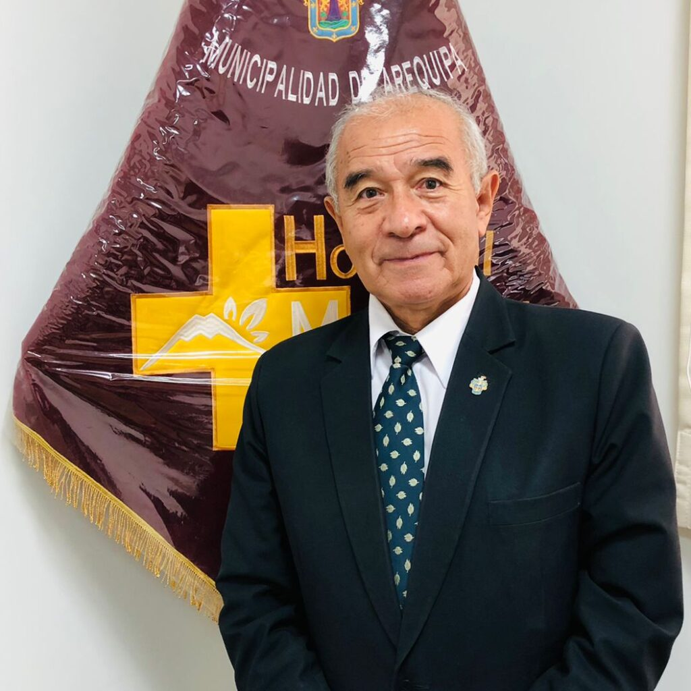
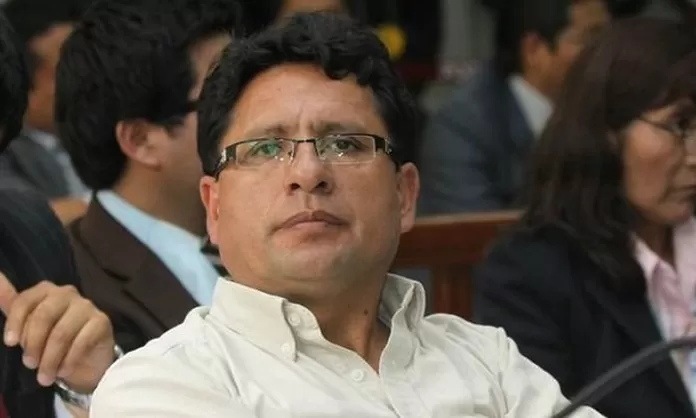
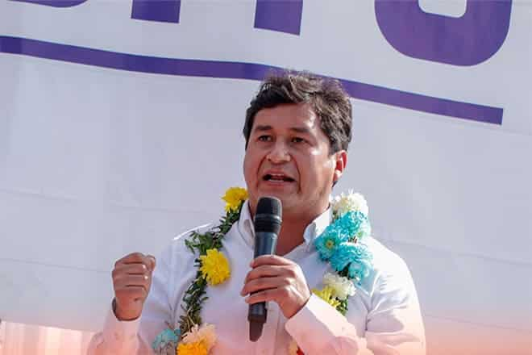
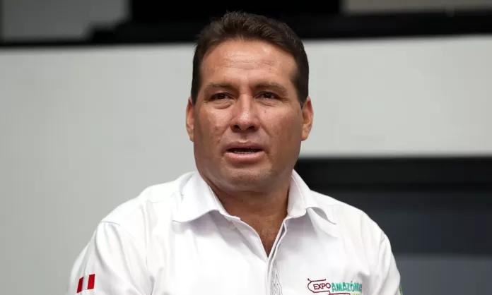
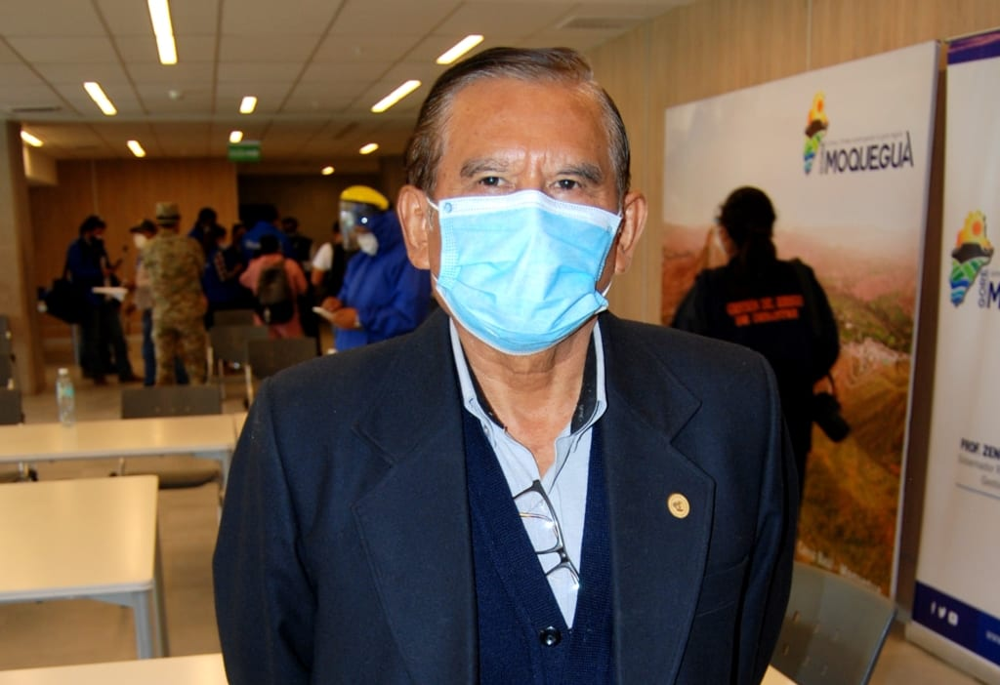
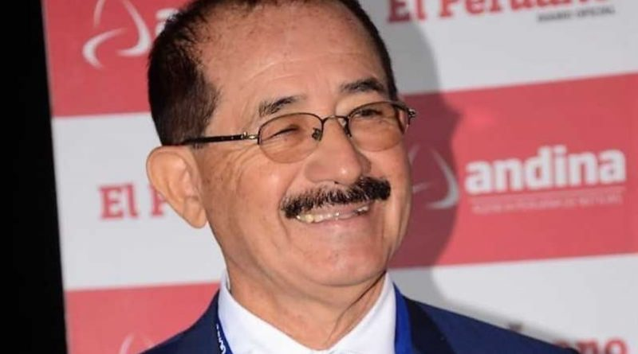
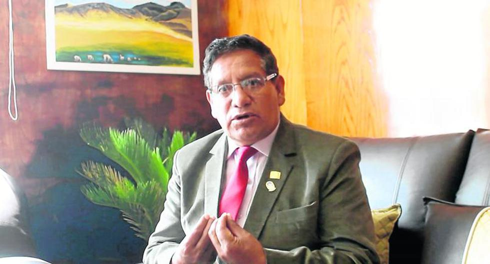

| Region | Candidato | Posible candidato | Partido |
|---|---|---|---|
| Lima | Carlos Bruce, Natividad Marin Lozano, Jean Ferrari | |
Somos Perú |
| Arequipa | Gustavo Rondón Fudinaga, Sergio Dávila Vizcarra, Giovana Bedoya Maque |  |
Alianza para el Progreso |
| Loreto | René Chávez, Elisban Ochoa | |
Somos Perú |
| Pasco | Klever Meléndez Gamarra, Teódulo Quispe Huertas, Pedro Ubaldo Polinar |  |
Alianza para el Progreso |
| Madre de Dios | Luis Hidalgo Okimura, Luis Otsuka Salazar, Jefferson Gonzales Enoki | |
Alianza para el Progreso |
| La libertad | Richard Acuña, Elías Rodríguez | |
Trabajo más Trabajo |
| Ancash | Vladimir Meza, Lombardo Mautino |  |
El Maicito |
| Puno | Richard Hancco, Alberto Quintanilla | |
Reforma y Honradez |
| Apurímac | Baltazar Lantarón Núñez, Michael Martínez Gonzales, Percy Godoy Medina | |
Podemos Perú |
| Ucayali | Manuel Gambini |  |
Ucayali Región con Futuro |
| Cuzco | Jean Paul Benavente, Werner Salcedo | |
Acción Popular |
| Tacna | Mario Carpio Valencia, Luis Torres Robledo | |
Fuerza Tacna |
| Moquegua | Zenón Cuevas Pare, Mario Vizcarra Cornejo, Gilia Gutiérrez Ayala |  |
Juntos por el Perú |
| Ica | Jorge Hurtado Herrera | |
Renovación Popular |
| Ayacucho | Wilfredo Oscorima Núñez, Carlos Rua Carbajal, Germán Martinelli Chuchón | |
Somos Perú |
| Junin | Zósimo Cárdenas, Vladimir Cerrón | |
Sierra y Selva Contigo. |
| San Martin | Walter Grundel Jiménez, Pedro Bogarín Vargas, Sandro Rivero Uzátegui |  |
Acción Popular/Alianza Regional. |
| Piura | Jhony Peralta, Santiago Paz | |
Podemos Perú. |
| Tumbes | Wilmer Benites, Jesús Ortiz, César Humberto Fox Vilela | |
Ahora Nación. |
| Amazonas | Oscar Altamirano Quispe, Gilmer Horna Corrales, Mery Infantes Castañeda | |
Alianza para el Progreso. |
| Cajamarca | Mesías Guevara Amasifuén, Andrés Villar Narro, Felicita Tocto Guerrero | |
Frente Regional/Alianza País. |
| Huánuco | Juan Alvarado Cornelio, Luis Picón Quedo, Rubén Alva Ochoa | |
Acción Popular. |
| Lambayeque | Humberto Acuña Peralta, Anselmo Lozano Centurión, Gaudi Suji Chávez Pasco | |
Alianza para el Progreso. |
| Callao | Patricia Chirinos, Ariana Orué, Noelia Herrera | |
Renovación Popular. |
| Huancavelica | Leoncio Huayllani Taype, Glodoaldo Álvarez Oré, Zósimo Cárdenas Muje |  |
Alianza para el Progreso. |